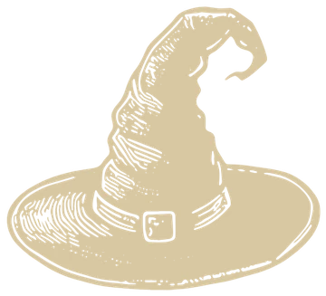
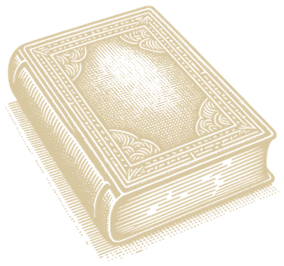

Tueste claro
Brillante y frutal
Conserva más acidez y aromas del origen: flores, cítricos, frutos rojos. Ideal para métodos de filtrado como V60 o Chemex.
Niebla Roasters · Machalí, Chile
La magia solo la ven aquellos que se detienen a observar.
Café de especialidad, tostado con dedicación.

Capítulo I · Nosotros
Somos una sociedad de buscadores.
Personas que alguna vez probaron el café de Niebla y sintieron que algo cambió. No nos definimos por títulos ni etiquetas, sino por la inquietud que nos une. Somos lectores, pensadores, creadores, observadores. Nos inspira la alquimia del conocimiento, pero con los pies en la tierra: trabajamos con productores comprometidos, tostamos con precisión, y servimos con intención. Niebla no es solo un lugar, es una forma de ver.
En Niebla, buscamos cultivar momentos de pausa y profundidad. Nuestra misión es ofrecer café que inspire conversación, reflexión y descubrimiento. Cada taza es una invitación a explorar lo invisible: lo que se piensa, lo que se siente, lo que se transforma. Trabajamos con respeto por el origen, atención al detalle y una curiosidad constante por lo que aún no sabemos.
Queremos ser un punto de encuentro para quienes valoran el conocimiento, la sensibilidad y la búsqueda. En Niebla, el café no es solo bebida: es lenguaje, es ritual, es herramienta. Imaginamos una comunidad que crece a través del intercambio, donde cada persona que ha probado nuestro café se convierte en parte de una red silenciosa pero vibrante. Una sociedad que evoluciona con cada conversación, cada idea compartida, cada taza servida.

Capítulo II · Café disponible
El café elige al barista
Orígenes que rotan según temporada, cada uno con su etiqueta y su fecha de tostado a la vista.
Invocando el catálogo…
Sin pago en línea: armas tu pedido, lo envías por WhatsApp y coordinamos pago y envío contigo.
Capítulo III · Aprende
Lo justo para elegir mejor y preparar con intención.
Tueste claro
Conserva más acidez y aromas del origen: flores, cítricos, frutos rojos. Ideal para métodos de filtrado como V60 o Chemex.
Tueste medio
Caramelo, chocolate, dulce de leche. Un punto de encuentro entre origen y tueste; funciona en casi cualquier preparación.
Tueste oscuro
Más cuerpo y amargor, notas a cacao y tostado. Aliado del espresso con leche y de la prensa francesa.
Grano o molido
Molido, el café pierde aromas en días. Si tienes molino, compra en grano y muele justo antes. Si no, te lo molemos según tu método.
Cómo leer la fecha de tostado
Por eso cada bolsa de Niebla lleva escrita su fecha de tostado, no solo una fecha de vencimiento.
Capítulo IV · Misiones
Brujos y brujas de Niebla: una nueva misión ha comenzado.
Cada bolsa de 250 g guarda un secreto perteneciente a la orden. Dos pruebas, dos recompensas:
Primera prueba
Reúne cinco tarjetas de Niebla y obtén un 10% de descuento en tu próxima compra.
5 tarjetas = 10% de descuento
Segunda prueba
Reúne diez sellos de lacre y canjéalos por un café de 100 g seleccionado al azar por el brujo tostador.
10 sellos = 1 café de 100 g
El destino decidirá qué origen llega a tus manos: Colombia, Brasil, Bolivia u otros cafés ocultos dentro de nuestra colección. Cada tarjeta y cada sello son prueba de tu recorrido dentro de la sociedad secreta del café. La búsqueda ya comenzó.
Talleres
Jornadas prácticas para entender el café más allá de una receta.
Atelier
Extracción y TDS, calibración de recetas, agua, percolación e inmersión, y cómo conservar tu café.
$60.000 por alumno
Atelier
Uso de la máquina, fundamentos de extracción, distribución y tampeo, y cómo calibrar un café desde cero.
$80.000 por alumno
Capítulo V · Contacto